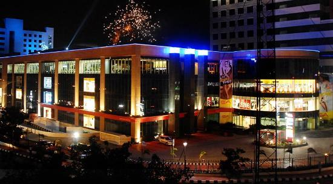
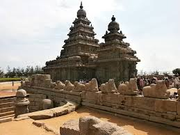

Express Avenue (Tamil: எக்ஸ்ப்ரெஸ் அவென்யூ is a shopping mall in Chennai promoted by Express Infrastructure, a subsidiary of The Indian Express Group.[1] It is home to the largest gaming arcade in South India. Built at a cost of ₹7500 million(US$120 million), the 1.75 million sq. ft mall has 10 anchor tenants and 150 vanilla tenants.[2]

Mahabalipuram, also known as Mamallapuram is a town in Kancheepuram district in the Indian state of Tamil Nadu. It is around 60 km south from the city of Chennai.
